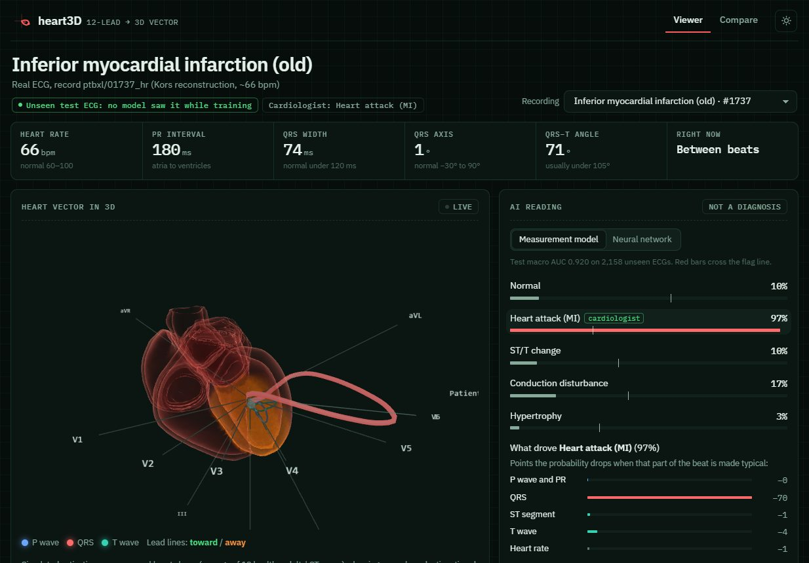

Build 01 · biomedical · AI · 3D
heart3D
An ECG is twelve flat shadows of one arrow swinging through the heart. heart3D rebuilds that arrow in 3D from real hospital recordings, plays it on a real heart shape with the electrical wave sweeping across it, and lets two AI models read the trace and show which part of the heartbeat drove their answer.
- 21,799 real ECGs
- 0.93 AUC, 5 diagnosis groups
- 19 CT scans behind the heart
A gradient-boosted model on measurements and a 1D ResNet on raw signals, both close to published benchmarks. Live mode streams an ECG in as if from a bedside monitor. A learning tool, not a medical device.
Python · NumPy · scikit-learn · PyTorch · signal processing · three.js

↑ one real heartbeat, live. drag it around.
an ECG is 12 shadows of one arrow. I wanted to see the arrow.